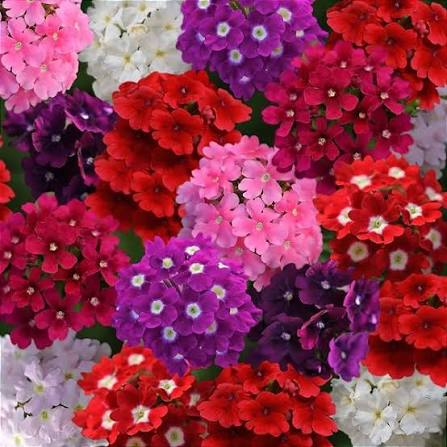

A verbena é uma planta ornamental conhecida por suas pequenas flores agrupadas e pelas diversas cores que podem apresentar, como rosa, roxo, vermelho e branco. É bastante utilizada em jardins, canteiros e áreas paisagísticas.
A verbena é uma boa opção para um jardim botânico pequeno, pois pode ser cultivada em espaços reduzidos e possui grande valor ornamental, ajudando a deixar os canteiros mais coloridos e atrativos para os visitantes.
Suas flores também podem atrair borboletas, abelhas e outros polinizadores, contribuindo para a biodiversidade do jardim.
Nome popular: Verbena
Nome científico: Verbena spp.
Família: Verbenaceae
Tipo: Planta ornamental
Altura: Aproximadamente 20 a 60 cm, dependendo da espécie
Luminosidade: Sol pleno
Solo: Fértil e bem drenado
Floração: Pode ocorrer durante boa parte do ano em condições favoráveis
A verbena pode contribuir para a biodiversidade do jardim ao oferecer flores que atraem diferentes polinizadores. Por isso, também pode ser utilizada em atividades de educação ambiental e observação da natureza.
Existem diversas espécies de verbena, apresentando diferentes formatos, tamanhos e cores de flores. Algumas são utilizadas principalmente como plantas ornamentais devido à sua capacidade de formar conjuntos floridos.